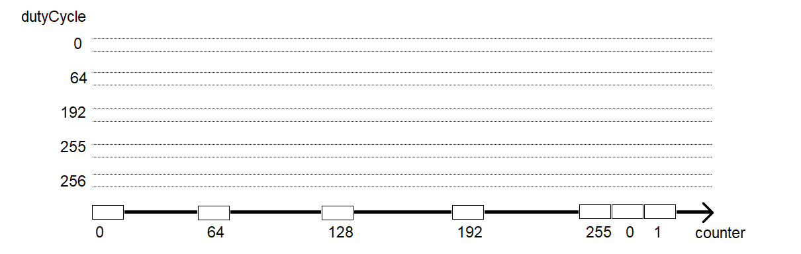
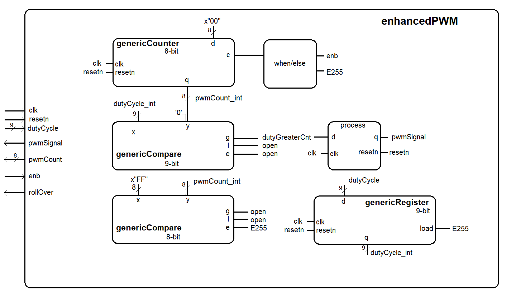

| Lecture | 6 |
| Code | |
| Class Objectives | Understand enhancedPWM architecture and predict the circuits behavior. |
Lab 01
For lab #1 you will use the Vivado tools to write the VHDL code for an enhancedPwm component. We will use this component later as a peripheral to one of the Arm Cortex's inside the Zynq chip.enhancedPwm
The enhancedPwm component generates a PWM waveform with a period of 256 clocks and a duty cycle that ranges from 0 to 256.- When the duty cycle is 0, the PWM waveform spends 100% of its time at logic 0.
- When the duty cycle is 256, the PWM waveform spends 100% of its time at logic 1.
- dutyCycle > counter pwmSignal equals 1
- dutyCycle ≤ counter pwmSignal equals 0

You can see than answer here. It should be clear from this work that in order to have both a 0% and 100% duty cycle, the dutyCycle input needs to range from 0 to 256, a 9-bit variable.
{kind=link}
Libraries
When putting together all the files for your project, you should unzip the basicBuildingVhdl file and put it at the same level as your lab01 folder. Then include the entire directory in your lab01 project. This way you will be able to use any of the devices as needed. In addition to the component VHDL files, there is a special file called "basicBuildingBlocks_package.vhd" which contains the entity descriptions of the components in the basicBuilding directory. You will then need to include the package file as a library at the top of your program as follows.library IEEE; use IEEE.STD_LOGIC_1164.ALL; use work.basicBuildingBlocks_package.all;
Architecture
The design of Lab 1 is broken down into separate modules, some of which are provided for you and some which you will need to create. The interconnection of the modules is illustrated in the following schematic. When a signal name appears just inside a box, that should should correspond to the name of that signal in the entity description.
genericCounter and generiComparator
The genericCounter and genericComparator at the top of the diagram are the core of the pwm generator. The 9-bit genericComparator needs to pad the 8-bit counter output with a most significant '0'. I did this in my VHDL file using the following CSA.pwmCount9bit_int <= '0' & pwmCount_int;The output of the counter is called pwmCount_int because this counter is used internal to the architecture and is an input to other components. A copy of this signal is made to pwmCount and sent out of the entity.
bottom genericComparator
The bottom genericComparator lets the circuit know when the 8-bit counter is rolling over by asserting the E255 signal when the 8-bit counter is equal to 255.genericRegister
The roll of the generic register is to latch the incoming dutyCycle when the 8-bit genericCounter rolls over. Updating the dutyCycle while the 8-bit counter was midway through counting to 255 could produce some unusual pwmSignal output. The output of the register is called dutyCycle_int because it's used internally to the architecture.when/else
The when else statement takes the external enb signal and the E255 signals and determines what 2-bit control signal to send to the genericCounter. The following table describes that relationship between the 2-bit control of the genericCounter and the counter's behavior. This table is contained in the genericCounter.vhd file.-- 00 Hold -- 01 load -- 10 inc -- 11 reset
Hazards
The greater than output of the 9-bit genericComparator, dutyGreaterCnt is run through a D flip flop before being sent out as the pwmSignal. Why?Large comparators work from the most to least significant bits, each pair of corresponding bits of the inputs are processed by a small chunk of hardware called a bit-slice. The bit slices are connected to one another from most to least significant bit. At each bit slice, looks at the inputs from the more significant slice, it this more significant slice has determines that X > Y or that Y>X then this slice just echos this on its outputs to the less significant slice. However, if the more significant slice states that X=Y up to this slice, then the bit slice comparator looks at its 1-bit x and y inputs to see if they are different.
During this journey from most to least significant bit, intermediate, unstable configurations in the logic joining the comparator slices can develop leading to transients on the G, L or E outputs. These transients are short-lived, lasting nanoseconds, before the comparator output returns to the correct output values. As a consequence of this behavior, the comparator outputs are said to contain glitches.
The following oscilloscope capture shows a pair of comparators, instantiated on a Xilinx FPGA, glitching on their outputs.

The point of all this discussion is that you cannot trust the output of a comparator to be stable, it may contain glitches. The solution to this problem is to buffer the output of a comparator with a D flip flop. Since the glitches are transient, they will not last an entire clock cycle. So if we allow the comparator inputs to change at the beginning of a clock cycle, the glitches will be over before the arrival of the next clock edge. This is the reason that we buffer the output of the comparator with a D flip flop.